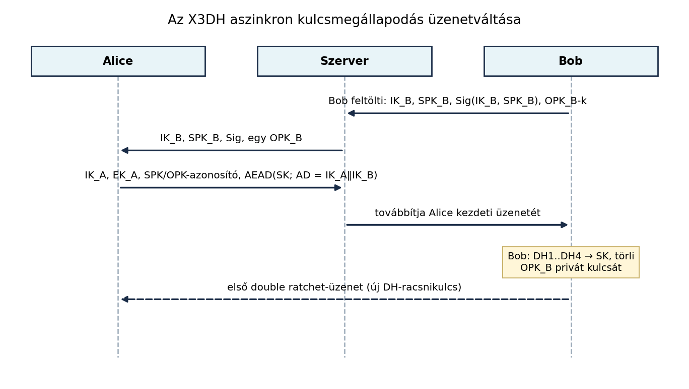
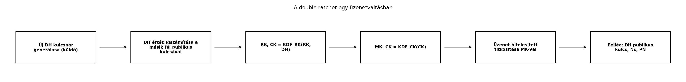

Az A Diffie–Hellman-kulcscsere és az ECDH és X25519 interaktív protokoll: mindkét félnek online kell lennie, hogy kicseréljék a frissen generált efemer kulcsokat. A modern üzenetküldő alkalmazásokban – például a Signalban vagy a WhatsAppban – azonban a címzett gyakran offline: repülőn ül, alszik, vagy nincs térerő. Ha Alice üzenetet akar küldeni Bobnak, Bob nem tud válaszolni a kulcscsere során.
Erre a problémára a Signal-protokoll két réteget vezet be:
A két komponens együtt biztosítja a végponttól végpontig titkosítást (end-to-end encryption), a forward secrecy alapjait és a kompromittálódás utáni helyreállást; utóbbit a Forward secrecy és post-compromise biztonság alfejezet tárgyalja mélyebben.
Az alábbi szekvenciadiagram az X3DH üzenetváltását mutatja. Bob előkulcsait a szerver tárolja, Alice lekéri azokat, kiszámítja a közös titkot, és már küldheti is a kezdeti titkosított üzenetét.

A double ratchet belső lépéseit a következő folyamatábra foglalja össze:

A folyamatábrán látható, hogy a DH-racsni lépés a gyökérkulcsot (root key, RK) frissíti, míg a szimmetrikus racsni a lánckulcsból (chain key, CK) üzenetkulcsot (message key, MK) és új lánckulcsot állít elő.
Definíció. Az X3DH (Extended Triple Diffie–Hellman) aszinkron kulcsmegállapodási protokoll, amelyben a címzett nyilvános előkulcsait egy szerver tárolja, a kezdeményező pedig efemer kulcsot generál. A közös titkot legalább három, opcionálisan négy Diffie–Hellman-értékből származtatjuk.
A protokoll szereplői:
Alice kezdeményezéskor Bob alábbi nyilvános kulcsait kapja meg a szervertől:
Alice generál egy efemer kulcspárt , majd kiszámítja a következő négy DH-értéket:
A közös titok ezek bitenkénti összefűzésének kulcsszármaztatása, tipikusan a Kulcsszármaztatás: HKDF alfejezet valamelyik változatával:
Bob a saját privát kulcsaival ugyanazokat a DH-értékeket számítja ki, mert a Diffie–Hellman-művelet szimmetrikus. A négy DH-számítás szerepe:
(A Signal X3DH-specifikációja szerint a DH₁ és DH₂ adja a kölcsönös hitelesítést, a DH₃ és DH₄ a forward secrecyt. Bob aláírt előkulcsának hitelességét Alice külön, az aláírás ellenőrzésével győződik meg.)
Továbbvitt eredmény. Az X3DH által előállított közös titok közvetlenül inicializálja a double ratchet gyökérkulcsát; ezt használjuk az Forward secrecy és post-compromise biztonság alfejezetben, valamint a 2. projekt: saját hitelesített kulcscsere-protokoll tervezése és elemzése során.
A kézi számoláshoz használjunk egy kis csoportot: , generátor . A Diffie–Hellman-érték . A privát kulcsokat szándékosan kicsire választjuk.
Bob kulcsai:
Alice kulcsai:
Most kiszámítjuk a négy DH-értéket Alice oldalán.
DH₁ =
:
.
,
.
Tehát
.
DH₂ =
:
.
,
,
,
.
Tehát
.
DH₃ =
:
.
,
,
,
.
Tehát
.
DH₄ =
:
.
,
,
,
.
Tehát
.
Bob oldalán:
A közös titok a valódi protokollban a négy DH-érték HKDF-fel
származtatott kulcsa; a példában az összefűzött érték
02 || 07 || 09 || 14 (hexadecimálisan). A toy példában a
DH-értékek byte-okba illeszthetők, és egy HKDF-hívás
bájtos kulcsot adna.
Definíció. A double ratchet egy szimmetrikus kulcsfrissítési mechanizmus, amely két racsnit kombinál:
A munkamenet állapota három kulcsot tartalmaz: a gyökérkulcsot , a küldő lánckulcsot és a fogadó lánckulcsot . Kezdetben , ahol az X3DH kimenete.
A KDF-függvények:
A gyakorlatban HMAC-alapú HKDF-et használ, ahogy azt a Kulcsszármaztatás: HKDF alfejezetben láttuk.
DH-racsni lépés:
Szimmetrikus racsni lépés:
A DH-racsni akkor fut le, amikor a küldő új DH kulcspárt küld, tipikusan minden irányváltásnál. A szimmetrikus racsni viszont minden egyes üzenetnél, így minden üzenethez más üzenetkulcs tartozik, még akkor is, ha nincs DH-racsni.
Az alábbi ábra a két fél racsniállapotát követi egy rövid üzenetváltásban: Alice két üzenetet küld (A1, A2), Bob válaszol (B1), majd Alice új láncának két üzenete közül az A4 előbb érkezik meg, mint az A3. A késve érkező üzenet kulcsát a fogadó a skipped táblában tárolja (lásd a következő szakaszt).
Továbbvitt eredmény. A double ratchet az üzenetenkénti kulcsfrissítéssel biztosítja, hogy a régi üzenetkulcsok törölhetők legyenek; a pontos forward secrecy és post-compromise biztonsági tulajdonságokat a Forward secrecy és post-compromise biztonság alfejezet bizonyítja. A záróprojektben (2. projekt: saját hitelesített kulcscsere-protokoll tervezése és elemzése) ezt a racsnit kell elemezni és kiegészíteni.
A mobilos hálózatokban az üzenetek nem mindig érkeznek a küldés
sorrendjében. Ha egy nagyobb sorszámú üzenet érkezik, a fogadó a
közbülső üzenetkulcsokat kiszámolja, és egy korlátos
(MAX_SKIP) skipped message keys táblában
tárolja. Az üzenet fejlécében három mező utazik:
Ha egy üzenet késik, a fogadó a fejlécben szereplő sorszám alapján kiválasztja a tárolt üzenetkulcsot, visszafejti az üzenetet, majd törli a kulcsot a táblából. A tárolt, még fel nem használt kulcsok addig a forward secrecy gyenge pontjai, ezért a táblát korlátozni és időben üríteni kell; a felhasznált kulcsok törlése után viszont nem maradnak a memóriában.
A végponttól végpontig titkosítás önmagában nem véd a közbeékelődő támadó (man-in-the-middle) ellen, ha a támadó a kulcscsere során mindkét félnek a saját kulcsait mutatja. Az X3DH ezért biztonsági számokat (safety numbers) vezet be.
Definíció. A biztonsági szám a két fél identitáskulcsának lenyomatából képzett, felhasználóbarát, jól olvasható számsor, tipikusan 60 jegyű vagy csoportokba rendezett hexadecimális karakterlánc. A felek egymás biztonsági számát hanghívásban, telefonon vagy QR-kóddal ellenőrzik.
Ha Alice és Bob látott biztonsági száma megegyezik, akkor a közbeékelődő támadó nem cserélhette ki az identitáskulcsokat: a támadó más identitáskulcsai miatt a lenyomatok eltérnének. A biztonsági szám ellenőrzése tehát a hitelesített csatorna kialakításának gyakorlati módja, hasonlóan a tanúsítvány-ujjlenyomat ellenőrzéséhez a Tanúsítványok és az X.509 alfejezetben.
Az X3DH klasszikus Diffie–Hellmanra épül, ezért a Shor algoritmusa alfejezetben tárgyalt algoritmus futó kvantumszámítógépen feltörheti. A PQXDH az X3DH posztkvantum változata: Bob az X25519 kulcsok mellett egy ML-KEM (Kyber) nyilvános kulcsot is közzétesz; Alice a hagyományos DH-számítások mellett egy posztkvantum kulcskapszulát is képez, és mindkét értéket a HKDF-be helyezi. A részleteket a „Gyűjtsd most, fejtsd vissza később” és a posztkvantum-migráció alfejezet tárgyalja; itt csak annyit jegyzünk meg, hogy a PQXDH hibrid konstrukció, tehát a biztonság akkor is megmarad, ha csak az egyik réteg – klasszikus vagy posztkvantum – törik fel.
A Signal alkalmazás az X3DH + double ratchet protokoll első széles körben elterjedt implementációja. A jelenlegi Signal a Curve25519-et (X25519) használ identitáskulcsként, az aláírt előkulcsot XEdDSA-val írja alá, a DH-értékekből HKDF-SHA256-tal származtatja a közös titkot, az üzeneteket pedig a Double Ratchet-specifikáció ajánlása szerint AES-256-CBC + HMAC-SHA256 encrypt-then-MAC kompozícióval titkosítja (ellenőrzési igény: a libsignal aktuális verziója). A Signal előkulcsai egy központi szerveren vannak, de a szerver nem tudja visszafejteni az üzeneteket, mert a privát kulcsok kizárólag a végpontokon élnek.
A WhatsApp 2016-ban a Signal protokollra épülő végponttól végpontig titkosítást vezetett be minden csevegésre. (Az évszám ellenőrzést igényel, a szolgáltató bejelentése alapján.) A biztonsági számok itt is elérhetők: a felhasználók QR-kódot olvashatnak be, vagy a 60 jegyű számokat hasonlíthatják össze. A WhatsApp tehát ugyanazt az X3DH + double ratchet magot használja, bár a szerveroldali metaadatok és a csoportos üzenetek kezelése eltér. A csoportos üzenetküldésre a jegyzet csak utal, mert annak részletes tárgyalása a témaköri határok szerint későbbi tananyag.
Egyszeri előkulcs újrahasználata. Ha a szerver nem törli az OPK-t az első használat után, és ugyanazt a kulcsot több munkamenethez is kiadja, akkor a DH₄ forward secrecyt adó szerepe megszűnik. A támadó, aki később megszerzi az OPK privát kulcsát, több munkamenet közös titkát is kiszámíthatja. Helyes gyakorlat: a szerver minden OPK-t pontosan egyszer ad ki, a privát kulcsot a felhasználó törli.
Az üzenetkulcsok tárolásának elhagyása vagy a tárolt kulcsok soha nem törlése. Az első esetben a soron kívüli üzenetek visszafejthetetlenek; a második esetben a forward secrecy sérül, mert a régi kulcsok a memóriában maradnak. Helyes gyakorlat: skipped message keys tábla, használat után azonnali törlés.
A biztonsági számok ellenőrzésének elhagyása. Ha a felhasználók nem hasonlítják össze a biztonsági számokat, a közbeékelődő támadó észrevétlenül olvashatja az üzeneteket. Helyes gyakorlat: a kulcsok első használatakor a felület kérje a biztonsági szám megerősítését, és riasszon, ha a szám megváltozik.
A DH kimenet közvetlen használata AEAD-kulcsként. A nyers DH-érték nem egyenletes eloszlású, és hiányzik a kontextuskötés. Helyes gyakorlat: mindig HKDF, és az info mezőben a protokoll neve, a szerepek és a cél szerepeljen.
Nem hitelesített titkosítás használata. A double ratchet üzenetkulcsait hitelesítés nélkül használva a támadó módosíthatja a rejtett szöveget. Helyes gyakorlat: hitelesített titkosítás (a Signalban AES-CBC + HMAC encrypt-then-MAC, más implementációkban AEAD, például AES-GCM vagy ChaCha20-Poly1305), a headerhez kötött associated data-val.
1. feladat (A). Sorold fel az X3DH négy DH-számítását, és magyarázd el mindegyik szerepét. Miért van szükség legalább három DH-értékre?
2. feladat (A). A kidolgozott példa paramétereivel (, ) számold ki a értékét Alice és Bob oldalán is, és mutasd meg, hogy egyenlők.
3. feladat (B). Tegyük fel, hogy Bob ugyanazt az egyszeri előkulcsot kétszer használja, és a privát kulcsát nem törli. Magyarázd el, milyen támadás válik lehetővé, ha egy támadó később megszerzi az OPK privát kulcsát. Mely DH-értékeket tudja kiszámítani, és hogyan befolyásolja ez a forward secrecyt?
4. feladat (B). Tervezz egy rövid double ratchet üzenetváltást: Alice küld Bobnak két egymás utáni üzenetet, majd Bob válaszol egyet. Írd le a sending chain és receiving chain lépéseit, a KDF-hívásokat, és határozd meg, melyik üzenethez melyik üzenetkulcs tartozik.
5. feladat (C). Bizonyítsd be, hogy az X3DH közös titka Alice és Bob oldalán megegyezik. Használd a Diffie–Hellman-művelet szimmetriáját: .
6. feladat (D). Adott egy játékimplementáció, amely a DH₄-et kihagyja, és az OPK privát kulcsát nem törli. A támadó megszerzi Bob OPK privát kulcsát. Mutasd meg, hogy a támadó a DH₄ hiányában mely más DH-értékeket tudja kiszámítani, és hogyan befolyásolja ez a munkamenet biztonságát. Javasolj javítást.
1. feladat. A négy DH-számítás:
Legalább három DH-érték kell ahhoz, hogy mind Alice identitása, mind Bob identitása, mind az efemer kulcsok szerepet kapjanak. A DH₁ vagy DH₂ elhagyásával a protokoll nem kötné mindkét fél identitását a közös titokhoz, a DH₃ pedig a forward secrecyt adja.
2. feladat. A példában , . Bob oldalán:
Számoljuk: , , .
Alice oldalán , :
, , , .
Mindkét oldal ugyanazt az értéket adja: .
3. feladat. Ha Bob ugyanazt az OPK-t kétszer használja, és a privát kulcsot nem törli, akkor a támadó, aki később megszerzi -t, ki tudja számítani a DH₄ értékét minden olyan munkamenetben, ahol az szerepelt (a nyilvános az Alice kezdeti üzenetében látszik). A DH₄ ismerete önmagában nem elég: a DH₁–DH₃-hoz Bob és privát kulcsa (vagy Alice privát kulcsa, amelyet ő törölt) kellene. A publikus kulcsokból ezek nem számolhatók ki (CDH). Az újrahasznált, meg nem semmisített OPK miatt viszont ezeknek a munkameneteknek a forward secrecyje az és az későbbi kompromittálódásáig tart, nem pedig az OPK törléséig. Ráadásul ugyanarra az OPK-ra a támadó Alice kezdeti üzenetét visszajátszhatja. Helyes gyakorlat: az OPK privát kulcs törlése használat után, a szerver pedig minden OPK-t csak egyszer adhat ki.
4. feladat. Tegyük fel, hogy Alice küldő lánca , Bob fogadó lánca , és kezdetben a DH-racsni után.
Alice első üzenete: ; az üzenetet -gyel titkosítja.
Alice második üzenete: ; az üzenetet -vel titkosítja.
Bob fogadja az első üzenetet: , visszafejti, majd a másodikat alapján.
Bob válasza előtt irányváltás történik: Bob új DH kulcspárt generál, kiszámítja a DH-értéket, és . Ez a DH-racsni. Bob ezután a saját küldő láncán kulcsot kap, és a választ azzal titkosítja.
Alice Bob válaszát a saját fogadó láncának frissítése után -gyel fejti vissza.
5. feladat. A Diffie–Hellman-művelet szimmetriája: ha Alice privát kulcsa , publikus kulcsa , Bob privát kulcsa , publikus kulcsa , akkor
Alkalmazzuk ezt a négy DH-értékre:
Tehát a HKDF bemenete mindkét oldalon ugyanaz az összefűzés, így a közös titok is megegyezik.
6. feladat. Ha a DH₄ kimarad, és az OPK privát kulcs később kiszivárog, a támadó nem tudja közvetlenül kiszámítani a DH₄-et, mert az nem része a közös titoknak. A DH₄ kihagyása azonban azt jelenti, hogy a munkamenet nem kapja meg az egyszeri előkulcs biztosította forward secrecyt: a közös titok csak a DH₁, DH₂, DH₃ értékekre épül, és a DH₃ az aláírt előkulcshoz kötődik. Ha a támadó később megszerzi az aláírt előkulcs privát kulcsát (SPK_B privát), akkor a DH₁ és DH₃ értékeket kiszámíthatja, mert a publikus kulcsok a szerveren vannak. A DH₂-t azonban nem, mert ahhoz Bob hosszú távú identitáskulcsának privát részére lenne szüksége. A munkamenet tehát a DH₂ miatt még védett, de az OPK hiánya miatt gyengébb forward secrecyvel rendelkezik. Javítás: mindig használjuk az OPK-t, ha elérhető, és a privát kulcsot azonnal töröljük.
A Signal-protokoll két fő komponensből áll. Az X3DH aszinkron kulcsmegállapodás: Bob hosszú távú identitáskulcsát (), aláírt előkulcsát () és opcionális egyszeri előkulcsát () szerveren közzéteszi; Alice efemer kulccsal négy DH-értéket számít (–), és HKDF-fel közös titkot képez. A double ratchet ebből a titokból üzenetenként új kulcsot származtat: a DH-racsni a gyökérkulcsot frissíti, a szimmetrikus racsni a lánckulcsból üzenetkulcsot és új lánckulcsot állít elő. A soron kívüli üzenetekhez a skipped message keys táblát, a közbeékelődés felismeréséhez a biztonsági számokat használjuk. A PQXDH a posztkvantum ML-KEM réteggel egészíti ki az X3DH-t. Továbbvitt eredmény: a double ratchet üzenetenkénti kulcsfrissítése a Forward secrecy és post-compromise biztonság alfejezetben kerül precíz bizonyításra, és a 2. projekt: saját hitelesített kulcscsere-protokoll tervezése és elemzése alapját adja; a PQXDH a „Gyűjtsd most, fejtsd vissza később” és a posztkvantum-migráció alfejezetben folytatódik.
Az X3DH és a double ratchet leírása a Signal által publikált specifikációkra épül (Signal X3DH, Signal Double Ratchet). A HKDF részleteit az RFC 5869, az X25519-et az RFC 7748 adja meg. A WhatsApp 2016-os bejelentésének pontos dátumát és a jelenlegi Signal-verziók pontos kriptográfiai paramétereit (például az AEAD pontos változatát) a forrásdokumentációban ellenőrizni kell; a fenti leírás a stabil tananyag szintjén rögzíti a konstrukciót, de verziófüggő részleteket nem állít pontosként. A toy példa paraméterei (, ) kézzel ellenőrzöttek.